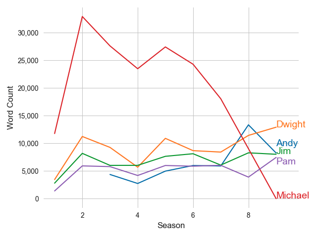

Who Drives The Office? Word Counts Over Seasons
Michael talks twice as much as the other characters
What are Michael's most frequent words?
Michael's 100 most frequently used words are not that interesting, although Ryan, Dwight and Pam make the cut

Michael's 100 most important words according to TF-IDF
Michael's girl friends top the ranking. References to classic episodes like rabies, roasted, and dundies also make the top 100

The term frequency - inverse document frequency (TF-IDF) algorithm ranks words highly that are unique to Michael's vocabulary. Or words that Michael says a lot (term frequency) and the other characters don't (document frequency). This algorithm works good when your corpus has a shared vocabulary, like characters in a tv show.
What is googi? When I first saw 'googi' rise to the top of the TF-IDF ranking, I thought there was an error in the source data. However, upon further investigation, I discovered that googi is core vocabulary to one of Michael's cringy and culturally insensitive characters--an Indian convenience store clerk. Michael is the only character to ever say the word googi and he says it sixteen times. Ultimately, Michael is slapped for performing this character.
Code
View the Python code on my github:
github.com/dan-dewitz/the_office_area_plot